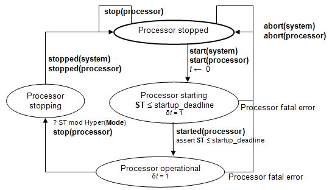

(1) A processor is an abstraction of hardware and software that is responsible for scheduling and executing threads and virtual processors that are bound to it. A processor also may execute driver software that is declared as part of devices that can be accessed from that processor. Processors may contain memories and may access memories and devices via buses.
Legality Rules
|
Category |
Type |
Implementation |
|
processor |
Features: · provides subprogram access · provides subprogram group access · port · feature group · requires bus access · provides bus access · feature Flow specifications: yes Modes: yes Properties: yes |
Subcomponents: · memory · bus · virtual processor · virtual bus · abstract Subprogram calls: no Connections: yes Flows: yes Modes: yes Properties: yes |
(L1) A processor component type can contain port, feature group, provides subprogram access, provides subprogram group access, and bus access declarations. It may contain flow specifications, a modes subclause, as well as property associations.
(L2) A processor component implementation can contain declarations of memory, bus, virtual bus, virtual processor, and abstract subcomponents.
(L3) A processor implementation can contain a modes subclause, flows subclause, and a properties subclause.
(L4) A processor implementation can contain bus access, subprogram access, subprogram group access, port, feature, and feature group connection declarations.
(L5) A processor implementation must not contain a subprogram calls subclause.
Standard Properties
-- Hardware description properties
Hardware_Description_Source_Text: inherit list of aadlstring
Hardware_Source_Language: Supported_Hardware_Source_Languages -- Properties related to source text that provides thread scheduling services
Source_Text: inherit list of aadlstring
Source_Language: inherit list of Supported_Source_Languages Source_Code_Size: SizeSource_Data_Size: SizeSource_Stack_Size: SizeAllowed_Memory_Binding_Class:
inherit list of classifier (memory, system, processor)
Allowed_Memory_Binding: inherit list of reference (memory, system, processor)
Allowed_Memory_Binding: inherit list of reference (memory, system, processor)
-- Processor initialization propertiesStartup_Deadline: TimeStartup_Execution_Time: Time_Range-- Properties specifying provided thread execution support
Thread_Limit: aadlinteger 0 .. Max_Thread_Limit
Allowed_Dispatch_Protocol: list of Supported_Dispatch_Protocols
Allowed_Period: list of Time_Range
Scheduling_Protocol: inherit list of Supported_Scheduling_Protocols
Scheduler_Quantum : inherit Time
Slot_Time: Time
Frame_Period: Time
-- acceptable priority value on threads and mapping into RTOS priority values
Priority_Range: range of aadlinteger
Priority_Map: list of Priority_Mapping
Process_Swap_Execution_Time: Time_Range
Thread_Swap_Execution_Time: Time_Range
Supported_Source_Language: list of Supported_Source_Languages-- Scaling of processor speed
Scaling_Factor : inherit aadlreal
Reference_Processor: inherit classifier ( processor )
-- Properties related to data movement in memory
Assign_Time: record (
Fixed: Time_Range;
PerByte: Time_Range; )
-- Properties related to the hardware clock
Clock_Jitter: Time
Clock_Period: Time
Clock_Period_Range: Time_Range
-- Protocol support
Provided_Virtual_Bus_Class : inherit list of classifier (virtual bus)
Provided_Connection_Quality_Of_Service : inherit list of Supported_Connection_QoS
-- mode related properties
Resumption_Policy: enumeration ( restart, resume )
Deactivation_Policy: enumeration (inactive, unload) => inactive
-- runtime protection support of address spaces
Runtime_Protection_Support : aadlboolean
-- Virtual machine layeringImplemented_As: classifier ( system implementation )NOTES:
The above is the list of the predefined processor properties. Additional processor properties may be declared in user-defined property sets. Candidates include properties that describe capabilities and accuracy of a synchronized clock, e.g., drift rates, differences across processors.
Semantics
(2) A processor is the execution platform component that is capable of scheduling and executing threads. Threads will be bound to a processor for their execution that supports the dispatch protocol required by the thread. The Allowed_Dispatch_Protocol property specifies the dispatch protocols that a processor supplies.
(3) Support for thread execution may be embedded in the processor hardware or it may require software that implements processor functionality such as thread scheduling, e.g., an operating system kernel or other software virtual machine. Such software must be bound to a memory component that is accessible to the processor via the Actual_Memory_Binding property. Services provided by such software can be called through the provides subprogram access features of a processor.
(4) The code that threads execute and the data they access must be bound to a memory component that is accessible to the processor on which the thread executes.
(5) If a processor executes device driver software associated with a device, then the processor must have access to the corresponding device component.
(6) Flow specifications model logical flow through processors. For example, they may represent requests for operating system services through subprograms or ports.
(7) The hardware description source text property may provide a reference to source text that is a model of the hardware in a hardware description language. This provides support for the simulation of hardware.
(8) Modes allow processor components to have different property values under different operational processor modes. Modes may be used to specify different runtime selectable configurations of processor implementations.
(9) Processor states and transitions are illustrated in the hybrid automaton shown in Figure 9. The labels in this hybrid automaton interact with labels in the system hybrid automaton (see Figure 22), the virtual processor hybrid automaton (see Figure 10), and the process hybrid automaton (see Figure 8).
· The initial state of a processor is stopped.
· When a processor is started, it enters the processor starting state. In this state, the processor hardware is initialized and any processor software that provides thread scheduling functionality is loaded into memory and initialized. Note that the virtual address space load images of processes may already have been loaded as part of a single load image that includes the processor or virtual processor software.
· Once the processor and its software for handling virtual processors or processes is initialized, the processor transitions to the processor operational state with started(processor). At this point virtual processor, process, and in turn thread initialization will start.
(10) While operational, a processor may be in different modes with different processing characteristics reflected in appropriate property values.
(11) As a result of a processor abort, any threads bound to the processor are aborted, as indicated by abort(processor) in the hybrid automaton in Figure 9 and in the hybrid automata figures in Sections 5.4 and 5.6. After that any virtual processor bound to or contained in a processor is aborted.
(12) A stop processor request results in a transition to the processor stopping state at the next hyperperiod of the periodic threads bound to the processor or to its virtual processors. The length of the hyperperiod can be reduced by using the Synchronized_Components property to minimize the number of periodic threads that must be synchronized within the hyperperiod (see Section 12).
(13) When the next hyperperiod begins, the virtual processors and processes with threads bound to the processor are informed about the stoppage request, as indicated by stop(processor) in the hybrid automaton in Figure 9. The process hybrid automaton (see Figure 8) in turn causes the thread hybrid automaton to respond, as indicated with stop(processor) in the hybrid automaton in Figure 5. In this case, any threads bound to the processor are permitted to complete their dispatch executions and perform any finalization before the process is stopped, which is indicated by stopped(process) in Figure 8.

Figure 9 Processor States and Actions
(14) A processor may have ports through which it reports information to the application software, e.g., to report error conditions. Those ports are identified in port connection declarations by the reserved word processor (see Section 9.1).
(15) A processor may have provide subprogram or subprogram group access to represent services that can be called by the application. A subprogram call identifies such a service by the subprogram classifier and the binding to the specific processor is implicit through the actual processor binding of the thread that contains the call.
(16) A processor component can include protocols in its abstraction. These protocols can be explicitly modeled as virtual bus subcomponents to satisfy protocol requirements by connections. The fact that a protocol is supported by a processor is specified by a Provided_Virtual_Bus_Class property.
(17) A processor can contain a bus subcomponent that it makes externally accessible. This models a bus that is managed by the processor and other components can connect to it. In this case the processor is implicitly connected to this bus.
(18) Different processors may be different execution speeds. This affects the execution time specified for threads and subprograms. The in binding statement of property associations permits processor type specific execution times to be declared. The execution time of a thread or subprogram can also be scaled according to scaling factors between different processors. The Scaling_Factor property specifies the scaling factor with respect to a specified Reference_Processor.
(19) The processor is an abstraction of a hardware processor and possibly a runtime system. If it is desirable, the internals of the processor can be modeled by AADL as a system in its own right, i.e., an application system and an execution platform. This system implementation description can be associated with the device component declaration by the Implemented_As property (see Section 14).
Processing Requirements and Permissions
(20) A method of implementation is not required to monitor the startup deadline and report an overflow as an error.
(21) A method of implementation may choose to enforce thread deadlines and maximum compute execution time. Violations are reported as thread recoverable errors.